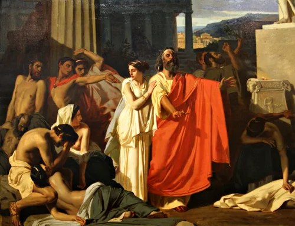

Fathom Journal · July 2026
Gazology, Antizionism, and the Manufacture of Conviction: What the Shelf Requires
“Readers think they are choosing a book. The shelf has already chosen their direction.”
Fathom Journal · July 2026
“Readers think they are choosing a book. The shelf has already chosen their direction.”
MAZL · June 30, 2026
“A man I knew had been turned into a category.”

Philosophy Now · 2016 · Existentialism issue
“Existentialism, as I understand it, is primarily a philosophy of tragedy.”
The Times of Israel · January 17, 2026
“What passed as “critique” revived old libels.”
The Routledge History of Social Protest in Popular Music · 2013
“Tragedy has been an essential mode of representing the human condition throughout history.”